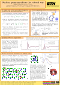
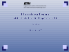
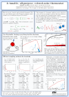

A list of papers can be found on the references page. Here, other resources are listed, including posters and seminar slides. This Ph.D. thesis contains a thorough introduction to the GLE thermostat, which includes some background on stochastic differential equations and a number of example applications.
A brief introduction to colored noise sampling for molecular dynamics is given in the February 2014 highlight of the Psi-K newsletter, while the lecture notes for the 2015 Juelich school give a discussion specific to the simulation of nuclear quantum effects.
Slides and posters
|  | "Nuclear quantum effects the colored way" Poster presented in Lugano for the CECAM workshop "Quantum Monte Carlo meets Quantum Chemistry" (2010). Example application of the "quantum thermostat" to estimate nuclear quantum effects in condensed-phase systems. Download PDF |

|
"A novel framework for enhanced molecular dynamics based on the generalized Langevin equation" Slides presented for M. Ceriotti's Ph.D. dissertation. General overview of both canonical sampling and non-equilibrium GLE thermostats. Download PDF |
|  | "A tutorial on the Generalized Langevin Thermostat" Slides for a group seminar. Introduction to the GLE, and thorough discussion of thermostat issues in the simulation of liquid water (classical, flexible forcefield). Download PDF |
|  | "A tunable, all-purpose colored-noise thermostat" Poster presented at Jülich, for the winter school "Multiscale simulation methods in molecular sciences" (2009). Applications of GLE thermostat to efficient sampling and to Car-Parrinello dynamics. Download PDF |